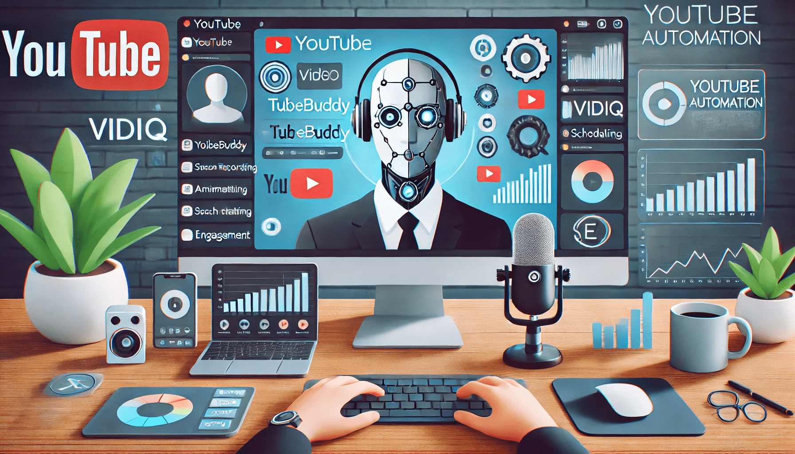

Faceless YouTube Automation: How to Grow Your Channel Without Showing Your Face
In the ever-evolving world of content creation, YouTube stands as one of the most powerful platforms for both budding creators and established brands. But here's the thing: You don't need to be in front of the camera to succeed on YouTube. Thanks to the rise of faceless YouTube automation, it’s now possible to build a successful channel without ever showing your face. Sounds too good to be true? Well, buckle up because we’re about to dive into the world of faceless YouTube automation, and it might just be the game-changer you’ve been looking for.
What is Faceless YouTube Automation?
Before we get into the nitty-gritty, let’s break down what faceless YouTube automation really means. In its simplest form, it’s about automating certain aspects of managing and growing a YouTube channel without requiring you to appear in front of the camera. Instead of starring in videos yourself, you can leverage tools, software, and strategies to create content, manage your channel, and promote your videos.
This is where platforms like YouTube Automation by NexLev come into play. They aim to teach you the fundamentals of YouTube automation without all the fluff. So, if you’ve been searching for that "secret" to YouTube success, let me save you some time: there isn’t a magical formula. What you really need is a solid understanding of the basics, realistic expectations, and a reliable network to help you along the way.
Why Go Faceless?
The idea of creating content without showing your face is appealing for many reasons. For some, it’s a matter of privacy. For others, it’s simply more comfortable to stay behind the scenes. But no matter your reason, faceless YouTube automation can open doors to content creation that you might have thought were closed.
1. Privacy and Anonymity
One of the biggest advantages of going faceless is that it lets you maintain your privacy. You don’t need to reveal your identity, your location, or even your personal life. In an era where people are increasingly concerned about online privacy, this can be a major selling point.
2. Lower Barrier to Entry
For many, the thought of showing their face on camera can be a major hurdle. Whether it’s due to stage fright, not liking the way they look on camera, or simply not wanting to put in the effort to appear on screen, a faceless approach eliminates all of that. This allows you to focus on creating content rather than worrying about your appearance.
3. Time and Energy Savings
Creating quality video content can be time-consuming, especially when you're in front of the camera. You have to make sure your lighting is good, your hair is in place, and you're ready to perform. Faceless YouTube channels, on the other hand, can rely on voiceovers, stock footage, animations, or screen recordings. This significantly reduces the time and energy needed to produce videos.
4. Scalability
With automation, you can create and upload videos at scale. Faceless YouTube automation can help streamline many processes, from video creation to video promotion, allowing you to grow your channel faster than if you were handling everything manually.
What Are the Basics of Faceless YouTube Automation?
Now that we’ve covered the "why," let’s get into the "how." To automate your YouTube channel, there are a few basics you need to understand. While there's no magic formula for success, mastering these fundamentals can set you up for growth and success.
1. Content Creation Without a Face
The cornerstone of faceless YouTube automation is content creation. Here are some ways you can create engaging videos without ever showing your face:
- Voiceover Videos: You can record your voice and pair it with visuals like slides, animations, or stock footage. There’s no need to appear on camera at all. This works well for educational or commentary-style videos.
- Screen Recordings: If you’re sharing knowledge or teaching something, you can record your screen and walk viewers through processes. For example, tutorials on software, coding, or how-to guides can all be done with a simple screen recording.
- Animation Videos: If you want to get creative, you can use animation tools to produce engaging videos. There are tons of online tools (like Vyond, Animaker, or Doodly) that allow you to create animated videos with no prior experience required.
- Stock Footage: Another way to make faceless content is by using stock videos and images. These can be paired with a voiceover to create a polished, professional-looking video without needing to film anything yourself.
2. Automating Video Uploads and Management
Once you've got content ready, the next step is automating the uploading and management process. Here are a few strategies to save time and effort:
- Scheduling Videos: You can use tools like TubeBuddy or Hootsuite to schedule your uploads. Instead of manually uploading videos every time, you can set everything up in advance and let these tools handle the rest.
- Automated Thumbnails: Creating thumbnails can be a hassle, but there are tools (like Canva or Snappa) that allow you to create attractive thumbnails quickly. Some tools even allow you to create thumbnail templates, which you can reuse for future videos.
- SEO Optimization: You can use software to help automate your SEO efforts on YouTube. Tools like VidIQ or TubeBuddy can suggest titles, tags, and descriptions based on trending keywords in your niche. They can even analyze your video performance to give you actionable insights to improve your ranking.
- Analytics and Growth Monitoring: Keeping track of your channel’s performance can be tedious. Thankfully, YouTube provides analytics, but there are also third-party tools that can automate reporting, saving you hours of manual work. By understanding your channel’s growth, you can fine-tune your automation strategy.
3. Engagement and Community Management
Building a community around your faceless YouTube channel is still a crucial part of the process. You might not be interacting with your audience face-to-face, but there are ways to automate engagement without losing that personal touch.
- Automated Comments: You can use tools like SocialBee or Buffer to schedule and automate your responses to comments. These tools also help you respond to common questions in a timely manner, keeping your audience engaged.
- Email Marketing: Building an email list is another way to stay connected with your audience. You can automate the process of sending out newsletters or updates whenever you post new content. This can drive more views and engagement on your channel.
- Social Media Promotion: While automation tools are great for YouTube itself, you can also automate cross-promotion on social media platforms. Tools like Zapier allow you to set up workflows that automatically post your videos on Facebook, Twitter, Instagram, or other platforms whenever you upload a new video.
The Importance of Realistic Expectations
Here’s the thing about YouTube: there’s no magic formula. Anyone who tells you they’ve discovered the secret to success is probably selling something. To succeed on YouTube, you need to be prepared for a marathon, not a sprint. Success won’t happen overnight, but with consistent effort, the right strategies, and a little automation, you’ll be on the right path.
Set realistic goals for your channel. Whether you aim for steady growth or you want to go viral, it’s important to understand that building a successful YouTube channel takes time. But the beauty of YouTube automation is that it streamlines much of the work, leaving you with more time to focus on the creative aspects.
A Strong Network Can Help
Finally, one of the most underrated elements of YouTube success is having a solid network of people who can support you along the way. Whether it’s fellow creators, automation tool developers, or YouTube strategists, a strong network can help you navigate the complexities of YouTube and stay motivated through the ups and downs.
YouTube automation platforms like NexLev offer communities of creators who can share tips, strategies, and support. So, while you may be working faceless behind the scenes, don’t underestimate the power of connecting with others who are on the same journey.
Conclusion: The Future of Faceless YouTube Automation
The world of faceless YouTube automation is an exciting one. It’s about more than just avoiding the camera; it’s about finding creative ways to produce content efficiently, scale your efforts, and still build a strong connection with your audience.
With the right tools and strategies, you can automate much of the process while still providing valuable content that resonates with viewers. Whether you’re creating educational content, entertainment, or commentary, there’s a way to make faceless YouTube automation work for you.
So, go ahead—embrace the world of faceless content creation, and watch your YouTube channel grow without ever having to put your face in front of the camera.